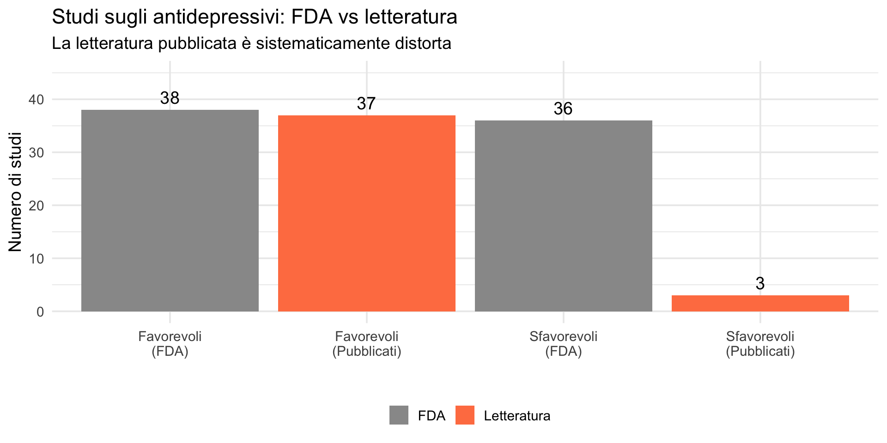
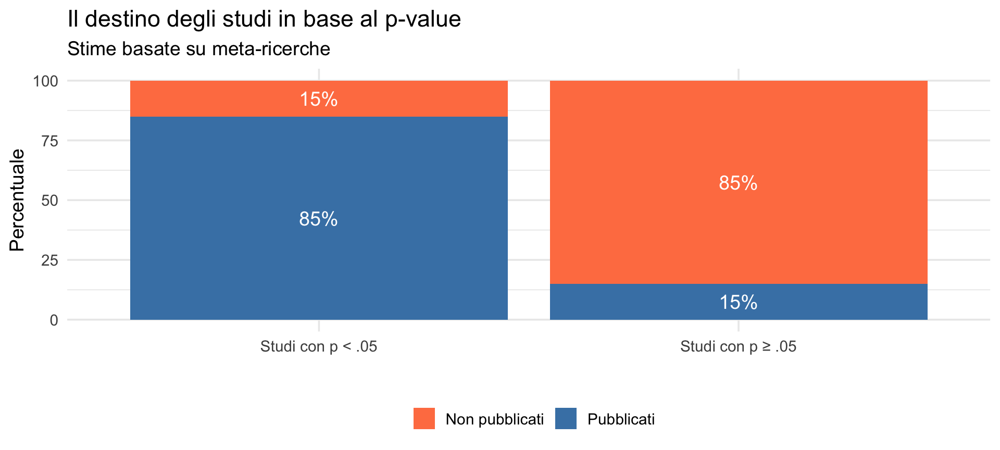
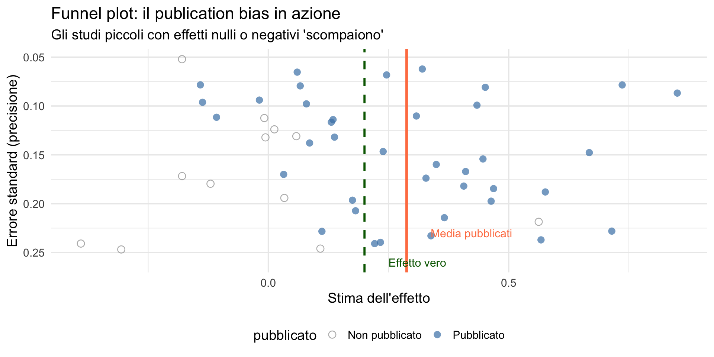
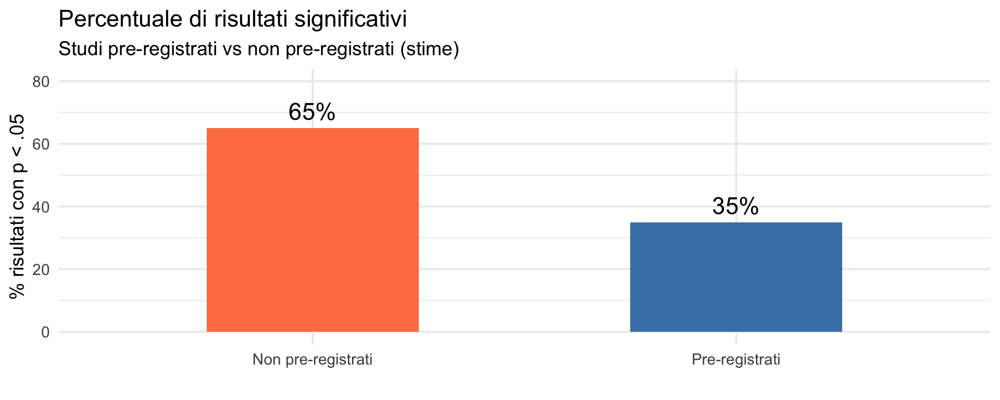
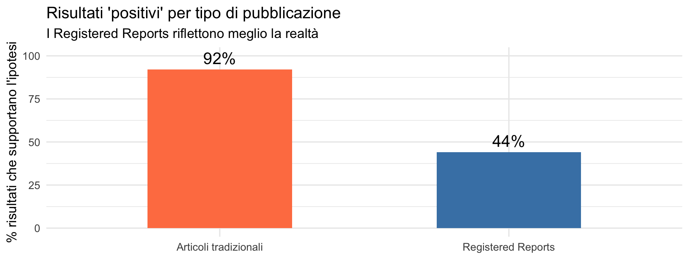
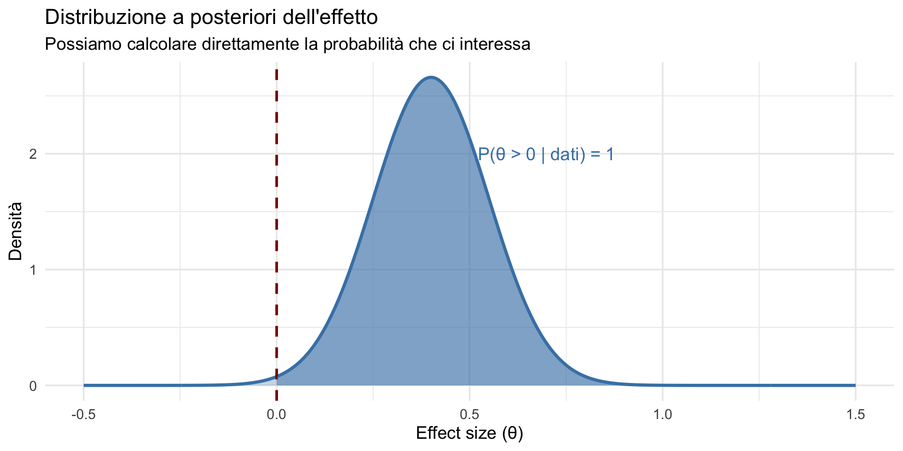

![]()

Dal laboratorio al mondo reale
Perché il sistema ha fallito — Segmento 2
13 febbraio 2026
Dove eravamo
Parte 1: abbiamo visto
- La crisi di replicabilità: ~60% degli studi non si replica.
- P-hacking: manipolazione delle analisi per ottenere p < .05.
- HARKing: ipotesi formulate dopo aver visto i risultati.
- Garden of forking paths: le scelte analitiche condizionano il risultato.
Parte 2: vedremo
- il publication bias e il suo ruolo critico;
- il circolo vizioso che mantiene il sistema;
- Open Science: la risposta della comunità scientifica;
- il contributo dell’approccio bayesiano — e la transizione verso il prossimo modulo del corso.
Parte 1: il publication bias
Il problema del cassetto
File drawer problem (Rosenthal, 1979)
Gli studi con risultati non significativi (\(p\) ≥ .05) hanno molte meno probabilità di essere pubblicati rispetto a quelli significativi.
Restano nel “cassetto” del ricercatore — mai sottomessi o rifiutati dalle riviste.
La dimensione del problema

Le cause del publication bias
Lato riviste:
- i risultati “positivi” sono più interessanti;
- i reviewer sono scettici sui risultati nulli;
- le riviste cercano impatto e citazioni.
Lato ricercatori:
- “non vale la pena sottomettere un risultato nullo”;
- pressione a pubblicare risultati “interessanti”;
- auto-censura preventiva.
Il funnel plot: un radar per il publication bias
Il funnel plot (grafico a imbuto) è uno strumento visivo per rilevare la distorsione da pubblicazione. Come funziona?
- Sull’asse orizzontale: la stima dell’effetto (es. differenza tra gruppi, correlazione).
- Sull’asse verticale: la precisione della stima (di solito l’errore standard o la dimensione campionaria).
Studi più precisi (campioni grandi, errore standard piccolo) stanno in alto.
Studi più imprecisi (campioni piccoli, errore standard grande) stanno in basso, alla base dell’imbuto.
Come si legge
In assenza di bias, gli studi si distribuiscono simmetricamente attorno al valore vero dell’effetto, come un imbuto rovesciato: più si scende (minore precisione), più la variabilità aumenta.
Se c’è publication bias, la simmetria si rompe:
- Gli studi piccoli con effetti nulli o negativi mancano all’appello.
- Gli studi piccoli che vediamo sono quasi tutti con effetti positivi e sovrastimati.
- La media degli effetti pubblicati si sposta a destra del valore vero.
Un caso concreto: gli antidepressivi
Turner et al. (2008) hanno confrontato gli studi sugli antidepressivi registrati alla FDA con quelli effettivamente pubblicati.
Cosa ci dice questa tabella?
Degli studi registrati alla FDA:
- 51% favorevoli agli antidepressivi;
- 49% sfavorevoli o ambigui.
Nella letteratura pubblicata:
- 94% favorevoli;
- 6% sfavorevoli.
Avviso
Un clinico che legge solo le riviste scientifiche ha un’immagine completamente distorta dell’efficacia reale dei farmaci che prescrive. Questo non è un problema astratto: riguarda decisioni quotidiane che influenzano la vita dei pazienti.
Il funnel plot applicato a dati simulati

Leggiamo insieme il grafico
- Punti grigi: studi non pubblicati — molti sono in basso a sinistra (bassa precisione, effetto nullo o negativo).
- Punti blu: studi pubblicati — in basso a destra restano solo quelli con effetto positivo e sovrastimato.
- Linea verde tratteggiata: effetto vero (0.2).
- Linea rossa continua: media degli studi pubblicati — molto più a destra.
Il funnel plot non “dimostra” il bias, ma lo rende visibile. Quando manca un’intera regione del grafico, c’è un problema.
Parte 2: il circolo vizioso
Come si sostiene il sistema
Il sistema si auto-perpetua attraverso un ciclo di rinforzi:
- Pressione a pubblicare → incentivo a trovare \(p\) < .05.
- P-hacking / HARKing → risultati “significativi” (ma distorti).
- Publication bias → solo i risultati positivi vengono pubblicati.
- Letteratura distorta → meta-analisi sovrastimano gli effetti.
- Repliche falliscono → c’è una “crisi” ma il ciclo continua.
Gli ingredienti
Ogni anello di questa catena corrisponde a un concetto che avete incontrato nelle ultime lezioni:
- La soglia binaria \(p < .05\) (lezione 15) crea l’incentivo.
- La bassa potenza (lezione 15) rende i risultati significativi esagerati.
- L’errore di Tipo M (lezione 15) spiega perché le stime si “restringono” nelle repliche.
- I gradi di libertà del ricercatore (oggi) amplificano i falsi positivi.
- Il publication bias (oggi) filtra selettivamente la letteratura.
Il risultato
La crisi di replicabilità non è un evento misterioso: è la conseguenza prevedibile di questi meccanismi combinati.
Gli incentivi perversi
| Comportamento | Vantaggio per il ricercatore | Danno per la scienza |
|---|---|---|
| P-hacking | Più pubblicazioni | Falsi positivi |
| HARKing | Narrativa convincente | Ipotesi non testate |
| Non pubblicare i nulli | Risparmio di tempo | Publication bias |
| Campioni piccoli | Meno costi, più studi | Bassa potenza, Type M |
Il sistema premia comportamenti che danneggiano la scienza (Smaldino & McElreath, 2016).
“Publish or perish”
La carriera accademica dipende dalle pubblicazioni:
- assunzioni basate sul numero di paper;
- promozioni legate all’impact factor;
- finanziamenti legati alla “produttività”.
Avviso
In questo contesto, \(p\) < .05 diventa una valuta — e come ogni valuta, può essere contraffatta.
Il ruolo del peer review
Il peer review dovrebbe essere un filtro di qualità, ma:
- i reviewer non vedono i dati grezzi;
- non possono rilevare il p-hacking;
- non sanno quante analisi sono state provate;
- spesso favoriscono risultati “interessanti”.
Il peer review cattura errori visibili, non quelli nascosti.
Parte 3: Open Science
La risposta della comunità
A partire dal 2011 (Simmons et al.) e accelerando dopo il 2015 (OSC), la psicologia ha sviluppato pratiche correttive.
Open Science = insieme di pratiche per aumentare trasparenza e riproducibilità
I pilastri dell’Open Science
Trasparenza
- Pre-registrazione delle ipotesi
- Condivisione dei dati (Open Data)
- Condivisione dei materiali (Open Materials)
- Codice open source (Open Code)
Rigore
- Registered Reports
- Repliche sistematiche
- Meta-analisi pre-registrate
- Multi-lab studies
Pre-registrazione
Definizione
Pre-registrazione: specificare ipotesi, metodo, e piano di analisi prima di raccogliere i dati, in un registro pubblico e con timestamp.
Piattaforme: OSF, AsPredicted
Cosa include una pre-registrazione?
- Ipotesi specifiche e direzionali.
- Design dello studio (\(n\), gruppi, procedure).
- Variabili dipendenti e indipendenti (operazionalizzate).
- Criteri di esclusione dei partecipanti.
- Piano di analisi completo (test, covariate, soglie).
- Analisi esplorative dichiarate come tali.
Perché funziona?

La pre-registrazione elimina il vantaggio di p-hacking e HARKing.
Registered Reports
Un formato di pubblicazione rivoluzionario:
- Stage 1: sottometti introduzione + metodo prima di raccogliere dati.
- Peer review sul design, non sui risultati.
- In-principle acceptance: se il design è buono, il paper sarà pubblicato.
- Stage 2: raccogli dati, analizza, scrivi risultati.
- Pubblicazione: indipendentemente dal valore-\(p\).
Il vantaggio dei Registered Reports

Fonte: Scheel et al. (2021).
Open Data e Open Code
Condividere dati e codice permette:
- verifica delle analisi da parte di altri;
- rianalisi con metodi diversi;
- meta-analisi più accurate;
- rilevamento di errori (anche onesti).
Nota
Molte riviste ora richiedono la condivisione di dati e codice come condizione per la pubblicazione.
Parte 4: e l’approccio bayesiano?
L’Open Science non basta
L’Open Science affronta i problemi della pratica della ricerca — trasparenza, pre-registrazione e condivisione dei dati. Ma anche con pratiche impeccabili, restano i problemi strutturali legati all’approccio frequentista.
Per capirlo, ricordiamo i limiti che abbiamo identificato nelle lezioni precedenti.
Ecco una versione più pulita, incisiva e didatticamente più forte della slide. Ho reso i punti più paralleli tra loro, eliminato ripetizioni e aumentato la chiarezza retorica.
I limiti strutturali del frequentismo
Il p-value risponde alla domanda sbagliata: \(P(\text{dati} \mid H_0) \neq P(H_0 \mid \text{dati})\).
L’intervallo di confidenza non assegna una probabilità al parametro (ma viene spesso interpretato come se lo facesse).
La soglia significativo / non significativo è una dicotomia arbitraria.
Non esiste un meccanismo naturale per accumulare evidenza tra studi.
Non si può quantificare l’evidenza a favore di \(H_0\): si può solo “non rifiutarla”.
Punto cruciale
Questi non sono errori di applicazione. Sono conseguenze logiche del framework frequentista.
Cosa offre l’approccio bayesiano?
Risponde alle domande giuste
- \(P(\theta \mid \text{dati})\) invece di \(P(\text{dati} \mid H_0)\)
- “Qual è la probabilità che l’effetto sia positivo?”
- “Quanto è probabile che l’effetto sia clinicamente rilevante?”
Gestisce meglio l’incertezza
- Distribuzioni invece di stime puntuali
- Intervalli credibili con interpretazione diretta
- Aggiornamento naturale con nuovi dati
Un confronto
Esaminiamo un confronto puntuali tra i due appricci:
| Domanda | Frequentista | Bayesiano |
|---|---|---|
| “Effetto \(\neq 0\)?” | valore-\(p\) | \(P(\theta \neq 0 \mid \text{dati})\) |
| “Quanto è grande l’effetto?” | IC (interpretazione indiretta) | Posterior (interpretazione diretta) |
| “L’effetto è clinicamente rilevante?” | Difficile da rispondere | \(P(\theta > \text{soglia} \mid \text{dati})\) |
| “Cosa sappiamo combinando più studi?” | Meta-analisi complessa | Aggiornamento sequenziale |
Un assaggio: posterior vs p-value

Cosa ci dice questo grafico
Ricordate l’inversione logica della lezione 14? La domanda naturale del ricercatore era “Qual è la probabilità che il trattamento funzioni?”, ma il frequentismo poteva rispondere solo a “Quanto sarebbero sorprendenti questi dati se il trattamento non funzionasse?”
Cosa ci dice questo grafico
L’approccio bayesiano risponde direttamente alla domanda del ricercatore. La curva blu è la distribuzione a posteriori: una volta osservati i dati, possiamo calcolare che c’è il 99% di probabilità che l’effetto sia positivo. Non “Se ripetessimo lo studio infinite volte…” — ma “Data l’evidenza che abbiamo, l’effetto è quasi certamente positivo.”
Questa è la differenza fondamentale. E il resto del corso sarà dedicato a capire come si costruisce questa distribuzione.
L’approccio bayesiano elimina il p-hacking?
No. Nessun metodo lo elimina da solo. Ma il framework bayesiano cambia gli incentivi:
- I prior devono essere esplicitati → le assunzioni sono trasparenti e criticabili.
- L’inferenza produce distribuzioni continue, non decisioni binarie → minore centralità della soglia.
- È possibile concludere che i dati sono inconclusivi → non serve forzare una “significatività”.
- L’evidenza può essere quantificata a favore di \(H_0\).
- Si integra naturalmente con la pre-registrazione (prior e modelli specificati prima dei dati).
Messaggio chiave
Il punto non è “Bayes è immune da abusi”. È che rende gli abusi più visibili e metodologicamente più costosi.
La combinazione più promettente è:
Open Science (pratiche) + Bayes (struttura inferenziale).
Riepilogo del modulo frequentista
Il percorso completo
Lezioni 5-11 — Probabilità, distribuzioni, verosimiglianza: gli strumenti matematici.
Lezione 14 — L’inversione logica: \(P(\text{dati} \mid H_0)\) vs \(P(H \mid \text{dati})\). Distribuzione campionaria, errore standard, IC e le sue interpretazioni (errate).
Lezione 15 — Il valore-\(p\): cosa (non) misura. Errori di Tipo I, II, S e M. La maledizione del vincitore.
Lezione 16 (oggi) — Le cattive pratiche (p-hacking, HARKing, garden of forking paths), il publication bias, il ciclo vizioso e l’Open Science come risposta.
Il percorso completo
Dalla prossima lezione: inferenza bayesiana — l’alternativa concettuale.
Il messaggio fondamentale
Take-home message
Il problema non è che il frequentismo sia “sbagliato” — è che risponde a domande diverse da quelle che vorremmo porre e il sistema di incentivi ha amplificato le sue debolezze fino a produrre una letteratura inaffidabile.
La soluzione richiede sia pratiche migliori (Open Science) sia strumenti concettuali diversi (approccio bayesiano).
Per approfondire
Sulla crisi di replicabilità:
- Open Science Collaboration (2015). Estimating the reproducibility of psychological science. Science.
Sulle cattive pratiche:
- Simmons, J. P., Nelson, L. D., & Simonsohn, U. (2011). False-positive psychology. Psychological Science.
Sull’Open Science:
- Nosek, B. A., et al. (2015). Promoting an open research culture. Science.
Materiali del corso
Modulo frequentista: https://ccaudek.github.io/utet-frequentista/
Prossimo modulo — Inferenza bayesiana: https://ccaudek.github.io/utet-companion/
Una citazione finale
“The first principle is that you must not fool yourself — and you are the easiest person to fool.”
— Richard Feynman
Il problema non è la malafede. È la struttura degli incentivi.
Un sistema fondato su soglie arbitrarie e decisioni binarie ha reso troppo facile convincersi di aver trovato qualcosa.
L’Open Science e l’approccio bayesiano non promettono la perfezione. Promettono qualcosa di più realistico:
un sistema che renda più difficile auto-ingannarsi.
Da qui in poi, iniziamo a costruire — e usare — gli strumenti di quel sistema.
Prossima lezione
Prior, verosimiglianza e posterior: l’architettura dell’inferenza bayesiana
- Il teorema di Bayes come strumento di aggiornamento.
- Prior: cosa sappiamo prima dei dati.
- Verosimiglianza: cosa dicono i dati (la conoscete già dalla lezione 11).
- Posterior: cosa sappiamo dopo aver osservato i dati.
Inizia il percorso verso l’inferenza bayesiana — e verso le risposte dirette alle domande che il frequentismo lascia senza risposta.
Bibliografia
Smaldino, P. E., & McElreath, R. (2016). The natural selection of bad science. Royal Society Open Science, 3(9), 160384.